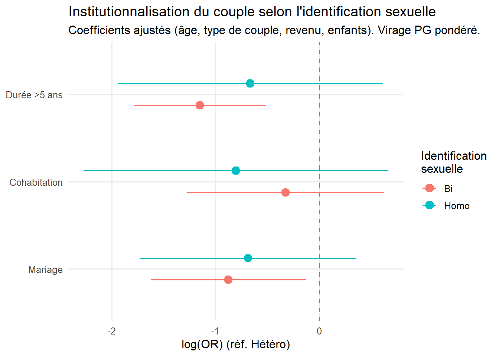

| Virage PG — Femmes |
| Virage PG — Femmes |
| Virage PG — Femmes |
| Virage PG — Hommes |
| Virage PG — Hommes |
| Virage PG — Hommes |
| Virage LGBT — Femmes |
| Virage LGBT — Hommes |
| ||||
|---|---|---|---|---|---|---|---|---|---|---|---|---|---|---|---|---|---|---|---|---|
Caractéristique | Homo | 95% IC | Bi | 95% IC | Hétéro | 95% IC | p-valeur2 | Homo | 95% IC | Bi | 95% IC | Hétéro | 95% IC | p-valeur2 | Homo | Bi | p-valeur3 | Homo | Bi | p-valeur3 |
Groupe d'âge | <0,001 | 0,001 | <0,001 | <0,001 | ||||||||||||||||
20-29 | 30,9 | [20% - 45%] | 47,0 | [36% - 58%] | 18,3 | [17% - 19%] | 21,8 | [15% - 30%] | 17,5 | [9,2% - 31%] | 19,0 | [18% - 20%] | 43,7 | 64,5 | 26,6 | 38,7 | ||||
30-39 | 30,0 | [20% - 42%] | 18,6 | [12% - 27%] | 20,2 | [19% - 21%] | 31,3 | [23% - 41%] | 9,4 | [4,6% - 18%] | 20,6 | [20% - 22%] | 27,7 | 23,1 | 24,2 | 16,8 | ||||
40-49 | 22,8 | [14% - 34%] | 18,7 | [12% - 28%] | 22,0 | [21% - 23%] | 24,0 | [18% - 32%] | 18,5 | [10% - 31%] | 22,4 | [21% - 23%] | 16,8 | 8,6 | 26,6 | 14,3 | ||||
50-69 | 16,2 | [9,5% - 26%] | 15,8 | [9,4% - 25%] | 39,4 | [38% - 40%] | 23,0 | [16% - 31%] | 54,6 | [40% - 68%] | 37,9 | [37% - 39%] | 11,8 | 3,8 | 22,5 | 30,2 | ||||
Revenu individuel | 0,004 | 0,13 | <0,001 | <0,001 | ||||||||||||||||
Moins de 1 000€ | 32,4 | [22% - 46%] | 48,4 | [38% - 59%] | 31,0 | [30% - 32%] | 18,5 | [12% - 27%] | 29,6 | [19% - 43%] | 17,3 | [16% - 18%] | 27,5 | 48,5 | 19,7 | 33,7 | ||||
De 1 000 à moins de 2 000€ | 40,3 | [29% - 53%] | 35,2 | [26% - 46%] | 41,7 | [41% - 43%] | 40,8 | [32% - 50%] | 37,5 | [24% - 54%] | 43,5 | [42% - 45%] | 39,1 | 29,1 | 28,7 | 29,2 | ||||
2 000€ et plus | 23,5 | [15% - 35%] | 10,3 | [6,4% - 16%] | 15,0 | [14% - 16%] | 35,8 | [28% - 45%] | 26,0 | [17% - 37%] | 28,8 | [28% - 30%] | 30,2 | 19,4 | 49,3 | 30,8 | ||||
NVPD/NSP | 3,7 | [1,2% - 11%] | 6,1 | [1,8% - 18%] | 12,3 | [12% - 13%] | 4,9 | [2,2% - 11%] | 6,9 | [1,7% - 24%] | 10,4 | [9,7% - 11%] | 3,2 | 3,1 | 2,3 | 6,3 | ||||
Situation financière | 0,010 | 0,4 | 0,001 | 0,038 | ||||||||||||||||
A l'aise/Ca va | 46,3 | [34% - 59%] | 47,9 | [37% - 59%] | 49,9 | [49% - 51%] | 63,3 | [54% - 71%] | 50,7 | [37% - 65%] | 52,7 | [51% - 54%] | 63,0 | 55,2 | 65,9 | 58,1 | ||||
C'est juste | 22,5 | [14% - 34%] | 26,0 | [17% - 37%] | 29,2 | [28% - 30%] | 23,0 | [17% - 31%] | 29,5 | [17% - 46%] | 29,5 | [28% - 31%] | 23,7 | 26,1 | 20,3 | 24,4 | ||||
Difficile/Dettes | 31,2 | [21% - 44%] | 22,0 | [15% - 31%] | 20,3 | [19% - 21%] | 13,8 | [8,6% - 21%] | 19,4 | [11% - 32%] | 16,8 | [16% - 18%] | 12,5 | 17,6 | 12,9 | 16,2 | ||||
NVPD/NSP | 0,0 | [0,00% - 0,00%] | 4,0 | [0,74% - 19%] | 0,6 | [0,47% - 0,80%] | 0,0 | [0,00% - 0,00%] | 0,4 | [0,05% - 2,5%] | 1,1 | [0,82% - 1,4%] | 0,8 | 1,1 | 0,8 | 1,3 | ||||
Taille d'agglomération | 0,012 | <0,001 | <0,001 | 0,005 | ||||||||||||||||
Moins de 20 000 | 34,4 | [24% - 47%] | 36,5 | [27% - 47%] | 51,2 | [50% - 52%] | 29,2 | [22% - 38%] | 42,7 | [29% - 57%] | 54,1 | [53% - 55%] | 22,9 | 15,6 | 18,1 | 25,7 | ||||
De 20 000 à 200 000 | 30,8 | [20% - 45%] | 20,5 | [13% - 31%] | 18,8 | [18% - 20%] | 18,9 | [13% - 26%] | 28,3 | [17% - 44%] | 20,5 | [20% - 21%] | 20,8 | 21,3 | 16,9 | 18,4 | ||||
200 000 et plus | 25,0 | [16% - 37%] | 30,1 | [21% - 41%] | 20,2 | [19% - 21%] | 44,3 | [36% - 53%] | 20,6 | [13% - 31%] | 19,6 | [19% - 21%] | 54,8 | 60,4 | 64,6 | 55,9 | ||||
NVPD/NSP | 9,7 | [4,4% - 20%] | 12,9 | [7,0% - 22%] | 9,8 | [9,1% - 10%] | 7,6 | [4,0% - 14%] | 8,3 | [2,6% - 24%] | 5,8 | [5,2% - 6,4%] | 1,5 | 2,8 | 0,4 | 0,0 | ||||
En couple au moment de l'enquête | <0,001 | <0,001 | <0,001 | 0,2 | ||||||||||||||||
Oui | 55,3 | [42% - 68%] | 57,9 | [47% - 68%] | 71,6 | [71% - 73%] | 54,4 | [45% - 63%] | 29,4 | [19% - 43%] | 73,7 | [73% - 75%] | 69,9 | 61,2 | 57,3 | 52,4 | ||||
Non | 44,1 | [32% - 57%] | 41,8 | [32% - 52%] | 27,5 | [27% - 28%] | 45,3 | [37% - 54%] | 70,1 | [57% - 81%] | 25,4 | [24% - 26%] | 27,9 | 36,4 | 41,4 | 46,3 | ||||
NVPD/NSP | 0,5 | [0,08% - 3,8%] | 0,3 | [0,04% - 2,0%] | 0,9 | [0,75% - 1,2%] | 0,4 | [0,09% - 1,7%] | 0,5 | [0,06% - 3,3%] | 0,8 | [0,64% - 1,1%] | 2,2 | 2,4 | 1,4 | 1,3 | ||||
En couple au cours des 12 derniers mois (> 4 mois) | 0,032 | <0,001 | 0,002 | 0,071 | ||||||||||||||||
Oui | 63,3 | [50% - 75%] | 63,1 | [53% - 72%] | 73,2 | [72% - 74%] | 58,7 | [50% - 67%] | 29,4 | [19% - 43%] | 75,8 | [75% - 77%] | 74,2 | 68,0 | 59,9 | 54,6 | ||||
Non | 36,7 | [25% - 50%] | 36,9 | [28% - 47%] | 26,8 | [26% - 28%] | 41,3 | [33% - 50%] | 70,6 | [57% - 81%] | 24,2 | [23% - 25%] | 25,8 | 32,0 | 40,1 | 45,4 | ||||
A des enfants | <0,001 | <0,001 | 0,029 | <0,001 | ||||||||||||||||
Oui | 20,7 | [13% - 32%] | 45,9 | [36% - 57%] | 73,7 | [73% - 75%] | 6,2 | [3,1% - 12%] | 41,8 | [28% - 56%] | 66,0 | [65% - 67%] | 15,5 | 12,1 | 8,6 | 26,8 | ||||
Non | 79,3 | [68% - 87%] | 54,1 | [43% - 64%] | 26,3 | [25% - 27%] | 93,8 | [88% - 97%] | 58,2 | [44% - 72%] | 34,0 | [33% - 35%] | 84,5 | 87,9 | 91,4 | 73,2 | ||||
Type de couple | <0,001 | <0,001 | <0,001 | |||||||||||||||||
En couple de même sexe | 62,9 | [49% - 75%] | 5,6 | [2,9% - 11%] | 0,4 | [0,25% - 0,51%] | 57,1 | [48% - 66%] | 5,8 | [2,7% - 12%] | 0,4 | [0,26% - 0,53%] | 73,5 | 38,1 | 59,0 | 22,5 | ||||
En couple de sexe différent | 0,4 | [0,05% - 2,7%] | 57,5 | [47% - 67%] | 72,8 | [72% - 74%] | 1,6 | [0,54% - 4,9%] | 23,5 | [14% - 37%] | 75,3 | [74% - 76%] | 0,5 | 28,9 | 0,8 | 30,8 | ||||
Pas en couple | 36,7 | [25% - 50%] | 36,9 | [28% - 47%] | 26,8 | [26% - 28%] | 41,3 | [33% - 50%] | 70,6 | [57% - 81%] | 24,2 | [23% - 25%] | 25,8 | 32,0 | 40,1 | 45,4 | ||||
NSP/NVPD | 0,0 | [0,00% - 0,00%] | 0,0 | [0,00% - 0,00%] | 0,0 | [0,00% - 0,00%] | 0,0 | [0,00% - 0,00%] | 0,0 | [0,00% - 0,00%] | 0,1 | [0,01% - 0,22%] | 0,1 | 1,1 | 0,1 | 1,3 | ||||
1% | ||||||||||||||||||||
2Pearson's X^2: Rao & Scott adjustment | ||||||||||||||||||||
3Fisher's Exact Test for Count Data with simulated p-value | ||||||||||||||||||||
Abréviation: IC = intervalle de confiance | ||||||||||||||||||||
Mémoire – Partie I
Les situations conjugales bisexuelles
Partie I : les situations conjugales bisexuelles
Dans cette première partie nous revenons sur les situations conjugales des personnes bisexuelles. Les deux enquêtes seront mobilisées pour réaliser une analyse descriptive des caractéristiques conjugales des personnes bisexuelles et une analyse comparative par rapport aux personnes homosexuelles et hétérosexuelles. Par situation conjugale nous entendu le fait d’être ou non en couple, le statut matrimonial, le type de couple (de même sexe, de sexe différent), les modalités relationnelles telles que la cohabitation, la durée de la relation, le fait d’avoir des enfants…
L’enquête Virage n’a pas été pensée pour saisir la variété des expériences relationnelles ou les trajectoires relationnelles, contrairement à Envie (Bergström 2025). Avec l’enquête Virage on se concentre sur le pôle le plus stable du spectre relationnel : le couple. Avec des modules dédiés à la situation matrimoniale, à la situation du ou de la (dernièr·e) conjoint·e, au ménage, aux enfants, à la vie de couple puis deux modules centraux sur les violences dans la relation de couple au cours des 12 derniers mois et dans la relation avec ex-partenaire au cours des 12 derniers mois, l’enquête Virage offre suffisamment d’éléments pour dresser un instantané de la situation conjugale des personnes qui se disent bisexuelles au moment de l’enquête et dans les 12 derniers mois.
Quelques hypothèses pour commencer
- Hypothèse 1 : l’âge est un déterminant d’accès à la conjugalité et de formes de conjugalité (Bozon, Bergström : voir si j’ai pas déjà cherché les refs qqpart ou dans doc revue litté)
- Hypothèse 2 : la classe est un déterminant d’accès à la conjugalité et des formes de conjugalité (idem)
- Hypothèse 3 : le fait d’être bi en couple de même sexe ou de sexe différent influence le type de conjugalité (ref sur conjugalité homosexuelle)
- Hypothèse 4 : les deux échantillons captent des bisexualités différentes, leur comportement vis-à-vis du couple ne sont toutefois pas réductible à leur structure hétérosexuelle ou homosexuelle de ceux-ci. Nous utiliserons la base en PG pour des observations générales puis creuserons certains aspects, lorsque nécessaire, grâce à la base LGBT. De plus les observations de couples bisexuels de même sexe se feront plutôt sur la base LGBT.
- Hypothèse 5 : les personnes bisexuelles en couple de sexe différent seront étudiés via PG / les personnes bisexuelles en couple de même sexe seront étudiés via LGBT.
I. Des caractéristiques conjugales spécifiques ?
A. Retour sur les analyses existantes
L’article de Mathieu Trachman et Tania Lejbowicz, Lesbiennes, gays, bisexuel·le·s et trans (LGBT) : une catégorie hétérogène, des violences spécifiques (Trachman et Lejbowicz 2020a), tente de saisir et définir les populations LGBT dans l’enquête Virage. Nous allons exposer les conclusions de cet article sur lesquelles nous nous appuyons en partie, avant de les discuter et d’en affiner certains aspects. Nous revenons d’abord sur l’âge et la classe, qui comme nous le montrerons plus tard sont des déterminants essentiels de la conjugalité, avant d’exposer les bisexualité captées par les deux échantillons.
Les âges genrés des identifications minoritaires
On y apprend tout d’abord que les lesbiennes, gays et bisexuelles y sont plus jeunes que les hétérosexuel·les. Plus de la moitié on moins de 40 ans, voire moins de 30 ans dans le cas des bisexuelles. Ce premier constat est à nuancer dans le cas des gays, dont l’intervalle de confiance chevauche celui des hétérosexuels. La jeunesse statistique des minorités sexuelles s’observe plus chez les femmes. Cette jeunesse par rapport aux hétéros est expliquée dans l’article par un effet de génération, qui offre aux plus jeunes un contexte plus favorable pour déclarer une sexualité minoritaire. On peut s’étonner que l’effet générationnel ne touche pas les jeunes bisexuels. La structure d’âge des bisexuel·les s’inverse selon le genre : les femmes bisexuelles sont plus jeunes que les autres femmes et les hommes bisexuels plus âgés que les autres hommes dans Virage PG, plus de la moitié d’entre eux ont plus de 50 ans. Ce clivage est moins net dans Virage LGBT où les hommes bisexuels sont surreprésentés à la fois dans la classe d’âge la plus jeune et la plus âgée par rapport aux gays. Il semblerait alors qu’un effet générationnel soit bien à l’oeuvre pour les hommes bisexuels mais pas dans la population générale, seulement dans la frange investie dans les espaces communautaires des populations LGBT.
Selon Matthieu Trachman et Tania Lejbowicz, la surreprésentation des bis aux âges élevés tient moins à une affirmation tardive qu’à un effet de contexte : « pour la génération des 50-69 ans, s’identifier comme bisexuel a pu être plus accessible que comme gay » (Ibid.) Cet effet de contexte mérite d’être approfondi. En effet, tous contacts, pratiques sexuelles avec un autre homme ou plus largement toute distance aux codes sociaux de la virilité expose au stigmate du pédé (Clair 2012). Cela fonctionne comme une sanction, un rappel à l’ordre, qui peut toucher n’importe quel homme. Ainsi l’expression de la bisexualité écarte de fait du groupe hégémonique dans lequel genre, sexe et désir coïncident. De plus, ce groupe des hommes de 50 à 69 ans au moment de l’enquête, né entre les années 1965 et 1985, connaît l’émergence de l’épidémie de VIH/Sida et la délimitation des populations dites à risque auxquelles sont intégrées les communautés homosexuelles(Girard 2021). Les hommes bisexuels sont accusés d’être un pont dans la transmission du virus à la population hétérosexuelle (P. C. R. Rust 2002) . Ces éléments, ainsi que l’absence de communauté ou d’espaces bisexuels au moment de l’enquête en France nuancent l’idée qu’une identification bisexuelle est plus accessible à ces hommes que l’identification gay. On pourrait supposer que le stigmate du pédé et la pression conjugale hétérosexuelle jouent plus fort aux âges les plus jeunes, contraignant les hommes bisexuels à se ranger du côté de l’hétérosexualité. Avec l’avancée en âge et des événements biographiques comme des séparations, des divorces ou l’acquisition de l’indépendance financière l’expression de sa bisexualité devient plus accessible que lors de la jeunesse. Il serait intéressant d’observer la proportion d’hommes bisexuels âgés dans les enquêtes plus récentes comme Contexte des Sexualités en France (CSF2023, Inserm) pour prolonger cette analyse. On peut faire l’hypothèse que dans certaines générations masculines et dans certains milieux sociaux, l’identification bisexuelle pouvait être plus facile que l’identification homosexuelle. Les modes de vie gais qui se développent au cours des années soixante et soixante-dix en France [9] ne sont sans doute ni toujours accessibles, ni toujours désirés par l’ensemble des hommes qui ont des rapports sexuels avec des hommes.(Trachman 2018a les personnes qui se disent).
Coté femmes, l’identification bisexuelle décroît avec l’âge, d’après Mathieu Trachman et Tania Lejbowicz c’est parce qu’elle est socialement conçue comme transitoire, les femmes étant en partie contraintes d’abandonner une identification jugée illégitime. L’enquête Envie, presque 10 ans plus tard, confirme cette adoption plus fréquente des identifications plurisexuelles (dont la bisexualité fait partie) par les jeunes femmes (Lejbowicz et Rault 2025). Les effets de génération et de genre se conjuguent pour expliquer une meilleure acceptabilité de la bisexualité chez les jeunes femmes. L’article ne propose pas d’interprétation pour les lesbiennes, elles aussi moins nombreuses dans la catégorie 50 - 69 ans. Il semble globalement que les identifications minoritaires sont moins accessibles pour les femmes âgées que pour les hommes âgés et que les jeunes hommes affirment plus souvent des préférences exclusives : reflet de leur plus grande autonomie en matière de sexualité (Ibid) ?
voir rault et lambert ci dessous
Quand déclaration identification homo-bi
bies et lesbiennes moins souvent un premier partenaire du même sexe que gays et bis (Trachman) ;
hommes plus nombreux à se dire gays que les femmes à se dire lesbiennes ;
femmes plus nombreuses à se dire bie et à déclarer attirance pour même sexe ;
Interprétation : plus facile de dire un désir ou des pratiques avec personnes des deux sexes pour les femmes (Trachman) ; modèles d’identifications disponibles : manque de référence et déni du lesbianisme (Chetcuti, Girard)
Alors que la bisexualité masculine fait peser la menace du stigmate du pédé sur les jeunes hommes, déclarer une attirance ou des pratiques entre femmes est mieux accepté tant que cela ne remet pas en cause le désir pour les hommes et la possibilité de futures trajectoires hétérosexuelles (Trachman et Lejbowicz 2018a). En effet la faiblesse des parcours lesbiens exclusifs, à la fois dans Virage PG et LGBT comparés aux gays de Virage LGBT illustre le poids de la contrainte à l’hétérosexualité (Rich 1981) plus lourd sur les femmes que les hommes. On peut proposer d’autres interprétations de cet identification plus forte des femmes aux plurisexualités : la fluidité et la souplesse de genre sont plus communes chez les femmes (Trachman, 2025) pouvant entraîner une moindre reconnaissance dans les monosexualités et s’accompagner d’une plus grande fluidité sexuelle.
Deux échantillons, deux bisexualités
L’enquête Virage LGBT repose sur un échantillon de volontaires, sollicités en tant que LGBT, ce qui résulte en une frange plus mobilisée dans les espaces communautaires. De ce point de vue les répondant-es sont plus jeunes, plus diplômées, urbains et cadres et professions intellectuelles supérieures (Trachman et Lejbowicz 2020b). En population générale ont voit une position sociale des hommes bisexuels relativement proche de celle des hétérosexuels. Comparativement à cette enquête en population générale, l’échantillon de convenance de Virage LGBT a tendance à gommer ces dispararités. Ce qui apparait spécifique aux homosexuels en population général (urbanité, position sociale supérieure, jeunesse) est accentué et caractérise aussi les bisexuels dans des proportions proches (Trawalé et al. 2026) . Concernant la conjugalité, les bisexuel·les de Virage LGBT sont plus souvent en couple avec une personne de même sexe. Cette proximité avec l’homosexualité se confirme aussi dans les parcours sexuels : plus nombreux·ses à avoir eu un premier partenaire de même sexe et les hommes des partenaires des deux sexes au cours de la vie. Mathieu Trachman et Tania Lejbowicz concluent ainsi à deux bisexualités différentes du point de vue des parcours conjugaux et sexuels : les bisexuel·les de Virage PG sont polarisé·es vers l’autre sexe tandis que ceux de Virage LGBT sont plus proches de l’homosexualité. Ainsi Virage LGBT accentue certains traits des populations homo-bisexuelles sans pour autant les distordre.
Notre hypothèse : si l’échantillon en population générale capte une bisexualité tournée vers l’autre sexe, la conjugalité des bisexuel·les ne s’y réduit pas à l’hétérosexualité.
Pour étayer cette hypothèse nous pouvons évoquer des conclusions déjà formulées sur des trajectoires bisexuelles chez les femmes marquées d’un écart par rapport aux normes de la sexualité féminine (entrée plus précoce dans la sexualité, nombre de partenaires sexuels plus important que les femmes hétérosexuelles) et des trajectoires bisexuelles masculines marquées par le célibat (Trachman et Lejbowicz 2018b)
II. Le célibat des hommes bis
L’identification bisexuelle comme « repoussoir » ou un célibat comme mise à distance choisie de la conjugalité ?
Le premier résultat central de ce travail est que la spécificité des hommes bisexuels vis-à-vis du couple réside dans son absence. Le célibat masculin bisexuel apparaît dans cette enquête à la fois plus massif et plus spécifiquement genré que son équivalent féminin. Ce point avait déjà été soulevé (Trachman et Lejbowicz 2018a) sans toutefois être contrôlé par d’autres variables telles que l’âge ou des déterminants de la classe. Deux lectures proposées sont proposées : d’une part une difficulté accrue à trouver un conjoint, liée à une « vulnérabilité conjugale spécifique des hommes bisexuels » : l’identification bisexuelle fonctionnerait comme un « repoussoir », ces hommes étant « socialement considérés comme des conjoints moins fiables par les femmes comme par les hommes ». D’autre part une mise à distance choisie de la conjugalité, perçue par une partie des hommes bisexuels comme un obstacle à la réalisation de leurs désirs.
La première hypothèse fait écho à l’idée selon laquelle les personnes bisexuelles seraient structurellement non-monogames, volages, incapables d’engagement de long terme parce qu’elles auraient simultanément besoin de partenaires des deux sexes — stéréotype que la recherche empirique contredit largement (P. C. R. Rust 2002).
Une autre piste d’interprétation se trouve selon moi dans l’âge à part de la population bisexuelle masculine. Bien que l’on ait vu que la probabilité d’être en couple est plus faible pour tous les bis, quelque soit leur âge, cette sur-représentation nous donne une indication sur leurs potentiels parcours de vie. Si la trentaine est le moment où la pression conjugale est la plus forte (Bergström, Courtel, et Vivier 2019) il est tout à fait possible qu’elle entraîne une mise en couple avec une femme. Les pratiques bisexuelles lors de cette période ou ayant eu lieu plus jeunes peuvent être considérées comme de simples expériences, sans conséquence pour l’avenir. On peut supposer qu’une partie des répondants bisexuels ont d’abord connu un mariage hétérosexuel avant de vivre leur bisexualité. Des recherches sur les mixed-orientation mariage dans les années 1980 se sont intéressées à ces mariages impliquant une personne bisexuelle (P. C. R. Rust 2002). Passé un certain âge, et surtout un certain âge social lié au fait d’avoir été en couple, peut-être marié et avec des enfants, l’injonction de fonder une famille et de se mettre en ménage se relâche. Les séparations et divorces donnent plus de liberté pour se dire bisexuel après l’avoir occulté une partie de sa vie ou pour la première fois suite à un changement dans la façon d’envisager les relations sexuelles et amoureuses (Dusseau 2017). Les parcours d’hommes gays devenus bisexuels ne sont jamais évoqués dans la littérature. Ils existent pourtant et peuvent être liés à un élargissement des sociabilités après une jeunesse tournée vers les lieux communautaires gays, à la transition d’un partenaire ou encore à la volonté de faire concorder les pratiques au cours de la vie avec l’identification sexuelle (P. C. Rust 2000).
Cet objet du célibat des hommes bisexuels est peu travaillé, la littérature française sur le célibat ne traite qu’exceptionnellement de son articulation avec l’orientation sexuelle, souvent faute d’effectifs suffisants dans les enquêtes (Bergström, Courtel, et Vivier 2019). Le constat se poursuit dans Virage, dont les effectifs bisexuels, bien que restreints, permettent au moins une approche descriptive.
Pour célibat et classe sociale : Bergström (célibat qui se poursuite avec âge : hommes populaires et moins diplômés)
Les trajectoires des hommes bisexuels dans Virage PG
Les petits effectifs nous empêchent d’entrer dans le détail statistique de qui sont les hommes bis célibataires. Il serait plus intéressant d’observer des trajectoires, de donner à voir les parcours biographiques : par exemple sont-ils célibataires suite à un divorce et une période longue de mariage avec enfants ? Ou alors sont-ils en célibat de longue durée, sans relation importante ? L’idée serait de faire des différences entre les hommes bisexuels célibataires. L’enquête Virage ne permet pas de faire une analyse de trajectoire au sens séquentiel. Elle ne comporte pas de calendriers des unions, contrairement à létude des relations familiales et intergénérationnelles ou GGS par exemple. Virage n’est pas une enquête biographique avec calendrier des unions, contrairement à Erfi par exemple. Le questionnaire ne demande pas non plus à quand remonte l’identification à la bisexualité. En revanche, le questionnaire documente en détail la relation actuelle et la dernière relation si la personne n’est plus en couple. On ne peut pas reconstruire une vraie séquence biographique mais on peut caractériser l’état de sortie de la dernière relation pour les personnes actuellement célibataires. On peut notamment creuser trois axes : le type de célibat (jamais en couple, célibataire après rupture) ; le statut de la dernière relation (marié, pacs, union libre) et le mode de sortie (séparation, veuvage) ; l’intensité de l’engagement dans le relation (cohabitation, durée, enfants).
Les célibataires après rupture
Pour commencer nous construisons un graphique-portrait (une ligne par répondant) des hommes bisexuels de Virage PG qui sont célibataires après rupture au moment de l’enquête. Les effectifs sont trop faibles pour un tableau croisé avec pourcentages : on privilégie donc une lecture individu par individu.
Le partage des célibataires jamais-en-couple / célibataires après-rupture est un résultat en lui-même. Un tiers des hommes bi célibataires (21/61) n’ont jamais eu de relation de couple au cours de leur vie. Cette catégorie se distingue de celle des célibataires “post-rupture” (40/61) que nous présentons ici.
::: {#tbl-portrait célibat hommes bi .cell tbl-cap=‘Le tableau portrait des hommes bi célibataires. Virage PG (pondéré).’} ::: {.cell-output-display}  ::: :::
::: :::
Chez les 40 bisexuels qui ont connu au moins une relation et une rupture, le graphique fait apparaître deux populations : un noyau de relations longues (5 ans et plus) ; et une masse de relations plus courtes (moins de 3 ans). Dans les deux cas l’union libre est la forme la plus fréquente bien que le mariage soit plus présent dans les relations de 5 ans et plus. La plupart sont sans enfants. (à commenter : rapport au mariage Maillochon) Ce potentiel non-recours au mariage ne peut être présenté comme un résultat, on l’interrogera dans le cas des femmes bisexuelles, plus souvent en couple. L’observer simplement ici pose la question de ce que signifie le mariage pour les personnes bisexuelles. Majoritairement en couple hétéro dans Virage PG, on peut se demander si elles y ont autant recours que les hétéros.
Point directement mobilisable pour votre sous-partie : le mariage, quand il survient, ne marque plus la naissance du couple mais sert de mode de « valorisation » ou de « représentation » d’un couple déjà installé (p. 42, citant Maillochon 2016). Cette bascule sémantique — du mariage comme seuil d’entrée au mariage comme acte de reconnaissance d’un couple préexistant — est utile si vous cherchez à interroger ce que peut signifier, pour un couple bisexuel préexistant, le recours (ou le non-recours) au mariage.
Nuance méthodologique Les éléments sur la précédente relation ne nous donne que peu d’informations sur le véritable parcours conjugal. En effet les variables de cohabitation, durée de relation et sexe du dernier conjoint ne sont filtrées que pour les ruptures ayant eu lieu il y a moins de 8 mois. Ce choix de conception de l’enquête est logique : le module détaillé consacré aux relations (cohabitation, caractéristiques démographiques du partenaire, questions sur la violence) ne s’applique qu’aux ruptures récentes survenues au cours de la période de référence de 12 mois utilisée par Virage tout au long de l’enquête, car les ruptures plus anciennes ne relèvent pas de cette période. Questionner les individus sur des relations lointaines entraîne des biais de mémoire.
Pour donner à voir les “parcours” je souhaite le compléter par quelques portraits rédigés descriptifs, choisis parmi les cas réels du tableau. Ils n’ont pas vocation à établir une typologie ou des cas-type mais plutôt d’illustrer concrètement ce que nous évoquons avec des tableaux et graphiques, sans sortir du registre descriptif et individuel. - un cas de célibat long après mariage avec enfants : Un homme de 60 ans, diplômé du secondaire : brevet des collèges / BEPC, en emploi, Professions intermédiaires administratives et commerciales des entreprises, rémunéré de 1600 à moins de 2000 euros, habitant Une agglomération de 100 000 à 200 000 habitants, 2 enfants, 2 enfants, divorcé depuis 24 ans, situation migratoire majoritaire, ayant eu des rapports sexuels avec une trentaine de personnes, des hommes et des femmes, a eu son premier rapport sexuel à 16 ans avec une femme, avec des attirances autant pour des hommes que pour des femmes,
un cas de célibat long après union libre sans enfant,
un cas de rupture très récente,
un cas jamais-en-couple.
Portraits — hommes bisexuels non repartenariés (Virage PG)
Note méthodologique préalable. Ces portraits mobilisent l’ensemble de la base individuelle (variables brutes et construites), au-delà des seules variables de conjugalité utilisées dans la première version. Quelques variables ont été volontairement laissées de côté faute de certitude sur leur signification exacte (EA14_age, REL4, le détail précis des items LGBT6d/6e) — je préfère l’absence à l’approximation. Deux points restent signalés comme des incertitudes plutôt que résolus (portraits 2 et 5, cf. version précédente). Pour le portrait 4, le nombre de partenaires sexuel·le·s décomposé par sexe (SEX9a1) atteint une valeur extrême (500) alors que la question sur le total (SEX9) a reçu la réponse « ne sait pas » : je le mentionne avec la réserve correspondante plutôt que comme un chiffre fiable.
Portrait 1 (id …1429)
Âgé de 26 ans, né en 1989, cet homme réside dans une agglomération moyenne du Grand Est. Diplômé du supérieur (bac+3 ou plus), il occupe une profession intermédiaire, en emploi, pour un revenu individuel de 1 300 à 1 600 euros mensuels. D’origine majoritaire, il vit seul et sans enfant. Il situe son attirance, depuis l’âge de 17 ans, surtout vers le sexe opposé mais aussi vers le même sexe.
Il a grandi avec ses deux parents, sans séparation connue, aux côtés d’une sœur (pas de frère). Son père occupait une profession intermédiaire (technicien, agent de maîtrise), sa mère une profession d’employée. La religion avait « un peu » d’importance dans son éducation ; lui-même se déclare aujourd’hui sans religion. Il a quitté le domicile parental à 19 ans et occupé son premier emploi de plus de quatre mois à 21 ans.
Son premier rapport sexuel a eu lieu à 17 ans, avec une femme qui allait devenir sa/son conjoint-e, un rapport qu’il souhaitait ; son premier rapport avec un homme est survenu la même année. Il compte une huitaine de partenaires sur l’ensemble de sa vie (quatre hommes, quatre femmes), mais aucun rapport sexuel au cours des douze derniers mois. Sa seule relation de couple connue, en union libre, jamais formalisée, s’est terminée par une séparation il y a environ trois ans (vers ses 23 ans) ; sa durée, la cohabitation ou non, et le sexe du/de la partenaire ne sont pas documentés, la rupture étant trop ancienne pour le sous-module correspondant.
Son orientation n’est connue ni de son père, ni de sa mère, ni de sa sœur. Elle l’est en revanche de certains de ses amis hétérosexuels et de tous ses collègues proches, mais pas des autres collègues, de son supérieur ni de son médecin traitant. Il a déjà été confronté à une menace de dévoilement non consenti émanant de sa famille, et évite, dans certains lieux, les gestes affectueux en public par crainte. Il ne fréquente jamais de lieux gays ou lesbiens.
Portrait 2 (id …3659)
Âgé de 60 ans, né en 1955, cet homme vit dans une agglomération moyenne de Nouvelle-Aquitaine. Titulaire d’un CAP/BEP, il occupe une profession intermédiaire et reste en emploi à 60 ans, pour un revenu individuel de 1 600 à 2 000 euros. Il vit seul, bien qu’il ait deux enfants, aujourd’hui âgés de 30 et 27 ans, qui ne partagent pas son logement. Il situe son attirance, depuis ses 17 ans, également répartie entre les deux sexes.
Il est issu d’une fratrie très nombreuse : quatre frères et sept sœurs, soit douze enfants au total. Ses parents vivaient ensemble lorsqu’il avait 14 ans. Son père occupait une profession intermédiaire administrative ou commerciale ; sa mère n’a pas d’activité professionnelle déclarée, ce qui, au regard de la taille de la fratrie, évoque une mère au foyer. La religion avait « assez » d’importance dans son éducation ; il se déclare aujourd’hui sans religion. Il a quitté le domicile parental à 24 ans.
Son premier rapport sexuel, à 16 ans, était avec une femme dont il était amoureux (mais qui n’était pas encore sa conjointe), un rapport souhaité ; son premier rapport avec un homme est survenu à 17 ans. Il déclare une trentaine de partenaires sur l’ensemble de sa vie (dix hommes, vingt femmes), et des rapports sexuels récents, avec plusieurs nouveaux partenaires au cours des douze derniers mois — une vie sexuelle active malgré l’absence de couple.
Sa dernière relation de couple était un mariage, décidé par les deux conjoints d’un commun accord, à l’âge de 25 ans, un mariage réellement désiré et non précédé d’une naissance. Il s’est terminé par une séparation il y a vingt-quatre ans (vers ses 36 ans) ; aucune autre relation de couple n’est recensée depuis lors — une trajectoire de long célibat après rupture conjugale. (Rappel : la variable construite « état matrimonial » le classe par erreur de construction comme « marié », alors que sa déclaration directe indique « divorcé », que je retiens ici.)
Ni son père ni sa mère ne savent qu’il est bisexuel ; certains de ses frères et sœurs le savent, depuis qu’il avait 19 ans. Aucun de ses amis hétérosexuels ni de ses collègues proches n’est informé ; seul son médecin traitant l’est. Il n’a jamais été incité à cacher son orientation, jamais menacé d’un dévoilement non consenti, n’évite jamais de gestes affectueux en public et ne fréquente jamais de lieux gays ou lesbiens — un profil de dévoilement sélectif et stable.
Portrait 3 (id …9144)
Âgé de 28 ans, né en 1987, cet homme vit dans une agglomération petite à moyenne des Pays de la Loire. Titulaire d’un baccalauréat, il est ouvrier et perçoit le revenu individuel le plus faible des cinq portraits (moins de 700 euros). Il vit en situation de famille monoparentale, sans enfant lui-même. Son attirance se porte, depuis ses 19 ans, surtout vers le même sexe, mais aussi vers le sexe opposé.
Ses parents se sont séparés alors qu’il avait 14 ans ; il vivait alors avec sa mère seule — et n’a, selon l’enquête, jamais quitté le domicile parental : il réside donc probablement encore aujourd’hui, à 28 ans, dans le foyer de sa mère, ce qui éclaire directement sa situation de ménage actuelle. Il a un frère (pas de sœur). Son père était ouvrier, sa mère employée. Il a occupé son premier emploi de plus de quatre mois à 22 ans. Catholique, il n’accorde aujourd’hui « pas du tout » d’importance à la religion, qui n’en avait qu’un peu dans son éducation.
Son premier rapport sexuel, à 17 ans, était avec une femme tout juste rencontrée, un rapport souhaité ; son premier rapport avec un homme est survenu à 21 ans. Il compte une vingtaine de partenaires sur l’ensemble de sa vie (dix hommes, dix femmes), et a eu des rapports sexuels récents, avec un nouveau partenaire, au cours des douze derniers mois. Sa relation de couple la plus récente des cinq portraits — en union libre, avec un homme de trois ans son aîné, sans cohabitation, d’une durée de deux ans — s’est terminée par une séparation il y a trois mois.
Sa mère et son frère savent qu’il est bisexuel, depuis qu’il avait 26 ans — les deux l’ayant, semble-t-il, appris au même moment — et l’ont totalement accepté d’emblée, comme aujourd’hui encore. Tous ses amis hétérosexuels le savent également, ainsi que son médecin traitant ; en revanche, ni ses collègues ni son supérieur ne sont informés. Il n’a jamais été incité à cacher son orientation ni menacé d’un dévoilement non consenti. Il évite, dans certains lieux, les gestes affectueux en public, mais c’est le seul des cinq portraits à fréquenter, occasionnellement, des lieux gays et lesbiens.
Portrait 4 (id …8986)
Âgé de 56 ans, né en 1959, cet homme réside à Paris ou en petite couronne. Diplômé du supérieur à un niveau élevé (bac+5), cadre de profession, il est actuellement au chômage indemnisé, pour un revenu individuel de 700 à 1 000 euros — sensiblement inférieur à ce qu’on attendrait de sa position sociale, signe probable d’une perte d’emploi récente. Immigré, arrivé en France à 30 ans, il vit seul et sans enfant. Il situe son attirance également répartie entre les deux sexes.
Il a grandi avec ses deux parents, tous deux d’origine immigrée, aux côtés d’un frère et d’une sœur. Son père était employé, sa mère sans activité professionnelle déclarée. Il a quitté le domicile parental à 30 ans — au moment même de son arrivée en France, ce qui suggère un départ lié à la migration plutôt qu’une décohabitation ordinaire. Il se rattache à une confession religieuse « autre » que les catégories usuelles, à laquelle il accorde aujourd’hui « un peu » d’importance ; elle en avait « assez » dans son éducation.
Son premier rapport sexuel, tardif, à 27 ans, était avec une femme tout juste rencontrée — un rapport qu’il n’avait pas souhaité mais avait accepté. Son premier rapport avec un homme est survenu plus tard encore, à 31 ans. Le nombre de partenaires sur l’ensemble de sa vie n’est pas établi avec certitude (réponse « ne sait pas » à la question globale, alors que le détail déclaré suggère un chiffre très élevé — à traiter avec prudence). Il a eu des rapports sexuels récents, avec plusieurs nouveaux partenaires, au cours des douze derniers mois. Il est le seul des cinq portraits à n’avoir, selon l’enquête, jamais eu de relation de couple.
Tous ses frères et sœurs savent qu’il est bisexuel, mais seulement depuis ses 38 ans — une reconnaissance tardive au regard de son âge actuel — et l’ont totalement acceptée, alors comme aujourd’hui. Tous ses amis hétérosexuels le savent également. Il a déjà été incité à cacher son orientation par des amis et des collègues, une situation qu’il juge susceptible de se reproduire, et a déjà subi des menaces de dévoilement non consenti dans au moins deux contextes distincts, dont le cadre professionnel — le profil le plus exposé des cinq portraits sur ce plan. Il déclare pourtant n’éviter jamais les gestes affectueux en public, et ne fréquente jamais de lieux gays ou lesbiens.
Portrait 5 (id …7398)
Âgé de 52 ans, né en 1963, cet homme vit dans un village de moins de 2 000 habitants en Occitanie. Sans diplôme, retraité, il perçoit le revenu individuel le plus élevé des cinq portraits (plus de 3 000 euros, vraisemblablement une pension). Il vit seul et sans enfant. Il situe son attirance, depuis ses 20 ans, surtout vers le sexe opposé, mais aussi vers le même sexe.
Ses parents vivaient ensemble lorsqu’il avait 14 ans. Il a une sœur (pas de frère). Son père était cadre administratif ou commercial (ingénieur possible), sa mère cadre de la fonction publique ou profession scientifique — une origine sociale nettement plus favorisée que sa situation actuelle sans diplôme, ce qui dessine une trajectoire descendante par rapport à ses parents. Catholique, il est le seul des cinq à accorder aujourd’hui « beaucoup » d’importance à la religion, comme elle en avait dans son éducation. Il a quitté le domicile parental à 18 ans et n’a subi, dit-il, aucune pression familiale au mariage.
Son premier rapport sexuel, précoce, à 14 ans, était avec une femme tout juste rencontrée, un rapport souhaité ; son premier rapport avec un homme est survenu à 20 ans. Il compte une dizaine de partenaires sur l’ensemble de sa vie (trois hommes, sept femmes), mais aucun rapport sexuel au cours des douze derniers mois — cohérent avec un veuvage récent.
Il a vécu trente-cinq ans avec une femme, en pacs, en cohabitation continue, une relation commencée vers ses 17 ans et achevée par le décès de sa partenaire il y a sept mois. Il déclare par ailleurs un mariage au cours de sa vie, célébré à ses 25 ans, décidé par les deux conjoints, réellement désiré et non précédé d’une naissance — sans qu’on puisse établir avec certitude s’il s’agit du même épisode que l’union pacsée qui vient de s’achever, ou d’un épisode antérieur distinct.
Son père, sa mère et sa sœur savent tous qu’il est bisexuel, depuis ses 21 ans — une divulgation apparemment simultanée à l’ensemble du cercle familial proche — et l’ont totalement acceptée, alors comme aujourd’hui. Certains de ses amis hétérosexuels le savent également, ainsi que son médecin traitant. Il n’a jamais été incité à cacher son orientation ni menacé d’un dévoilement non consenti, et déclare n’éviter jamais les gestes affectueux en public — à nuancer toutefois, la question portant sur un partenaire de même sexe, alors que sa dernière relation, vécue trente-cinq ans durant, était avec une femme. Il ne fréquente jamais de lieux gays ou lesbiens.
Quelques lignes de force qui ressortent une fois les portraits mis côte à côte, si tu veux les reprendre en synthèse :
Le dévoilement familial et le “jamais en couple” ne se recoupent pas simplement. Le portrait 4 (jamais en couple) a un dévoilement familial tardif (38 ans) mais large (toute la fratrie, tous les amis) ; le portrait 2 (24 ans de célibat après rupture) a un dévoilement quasi inexistant en famille mais stable et non conflictuel. Le célibat conjugal ne prédit donc pas le rapport à l’entourage. Le rapport à la sexualité pendant le célibat est hétérogène : deux portraits (1 et 5) n’ont eu aucun rapport sexuel dans l’année, deux autres (2 et 4) restent sexuellement actifs avec de nouveaux partenaires malgré l’absence de couple — utile si tu veux nuancer l’équation “célibataire = désengagé sexuellement”. Le portrait 3 est le seul où l’origine sociale, la trajectoire résidentielle (jamais quitté le foyer maternel) et le célibat s’articulent de façon lisible — les quatre autres montrent des chemins plus disparates.
IV. Les situations conjugales des femmes bisexuelles
Cadrage
On a vu dans la partie I que les femmes bisexuelles sont aussi souvent célibataires que les lesbiennes, mais que lorsqu’elles sont en couple elles le sont très majoritairement avec un homme (51,3 % de l’ensemble des femmes bisexuelles de Virage PG sont en couple avec un homme, soit 90 % de celles qui sont en couple). On se demande ici ce que recouvre concrètement cette conjugalité : avec qui les femmes bisexuelles forment-elles couple (sexe et position sociale du/de la conjoint·e), quelle est la position relative d’Ego dans ce couple (revenu et patrimoine comparés, revenu du ménage) et dans quelle mesure ce couple est institutionnalisé (mariage/Pacs, cohabitation, durée de la relation, enfants du couple).
On se limite pour l’instant à Virage PG, où la comparaison Hétéro / Bi / Homo reste possible avec pondération et intervalles de confiance. La comparaison spécifique des couples bi de sexe différent (PG) et bi de même sexe (LGBT) est renvoyée à un second temps (hypothèse 5, partie I).
Champ des tableaux qui suivent : femmes de 20-69 ans ayant eu une relation de couple de 4 mois ou plus au cours des 12 derniers mois (FCPL = 01 à 04, base pgnf_conjugal). C’est un champ plus large que celui des seules personnes en couple au moment de l’enquête : il inclut aussi les personnes dont la relation qualifiante s’est terminée récemment, ce qui peut faire apparaître quelques cas “Pas en couple” dans la variable de statut conjugal au moment de l’enquête (statutcouple).
Analyse tableau
ancienne analyse : Des bisexuelles en couple avec des hommes mais proche des lesbiennes dans le style d’union. Les lesbiennes et bisexuelles dans Virage PG sont moins souvent mariées, moins souvent en couple et plus souvent en union libre que les hétérosexuelles. L’écart de mariage des bisexuelles avec les hétérosexuelles subsiste même après contrôle de l’âge (travail sur les régressions en cours). L’écart entre lesbiennes et bisexuelles se creuse dans Virage LGBT, les bisexuelles sont moins souvent mariées et plus souvent célibataires. Cet écart doit encore être contrôlé par l’âge. Ces résultats sont intéressants quand on sait que 51,3 % de l’ensemble des femmes bisexuelles dans Virage PG sont en couple avec un homme (90 % de celles en couple). Une piste d’interprétation peut se trouver dans la déstabilisation du « principe hétérosexuel dyadique » (Klesse 2018) qu’implique la bisexualité et donc le potentiel éloignement vis-à-vis de l’institution du mariage. Aux États-Unis pourtant, les femmes bies sont les plus souvent en couple des LGB et elles invoquent les mêmes raisons de se marier que le reste de la population hétéro et LGBT (Gates 2015).
[à compléter une fois le tableau généré — pistes de lecture à garder en tête : 1) typecpl x csp_conjoint pour caractériser la position sociale des couples bi de sexe différent vs. de même sexe ; 2) lire revenu_compare et patrimoine_compare ensemble, une différence entre les deux pouvant signaler une asymétrie patrimoniale sans asymétrie de revenu courant, ou l’inverse ; 3) statutcouple et duree_rel ensemble pour l’hypothèse Klesse 2018 sur l’éloignement de l’institution du mariage ; 4) comparer ce tableau à celui du II sur l’accès à la conjugalité pour distinguer ce qui relève de qui accède au couple de ce qui relève de quelle forme prend le couple une fois formé.]
–> Vérifier sur quelle population porte chaque variable ? Pertinent de prendre pgn_conjugal ? Les résultats pour les enfants me semblent intriguant. Voir si je resserre les modalités revenu ménage pour améliorer significativité du lien.
Avant toute lecture, une réserve s’impose : les groupes homo (n=65) et bi (n=77) sont de petits effectifs, ce qui se traduit par des IC parfois très larges. Seules les lignes où le test omnibus est significatif et où l’IC d’un groupe minoritaire ne recoupe pas celui des hétérosexuelles seront lues comme des différences robustes ; les autres seront mentionnées comme suggestives ou non conclusives, conformément à la logique des deux tests déjà retenue plus haut.
Avec qui les femmes bies sont-elles en couple ? Sans surprise au vu des hypothèses 4/5, 91,1 % des femmes bies en couple le sont avec un homme [83 %-95 %]. La bisexualité féminine en PG se loge donc bien plus près de la conjugalité hétérosexuelle que de la conjugalité homosexuelle du point de vue du sexe du·de la partenaire, ce qui est cohérent avec la lecture des « deux bisexualités » (Trachman & Lejbowicz 2020) déjà mobilisée.
Position économique dans le couple. Le revenu comparé à celui du·de la conjoint·e distingue nettement les homosexuelles, mais pas les bisexuelles. Les femmes bies déclarent un revenu inférieur à celui de leur conjoint dans une proportion presque identique aux hétérosexuelles (58,1 % [43 %-72 %] contre 58,2 % [57 %-59 %]) et un revenu supérieur dans une proportion elle aussi très proche (15,5 % contre 16,4 %) : les IC se recoupent intégralement dans les deux cas. Les homosexuelles s’en distinguent nettement : revenu supérieur à celui de la conjointe dans 32,8 % des cas [20 %-48 %] contre 16,4 % chez les hétérosexuelles (IC disjoints), et revenu inférieur dans seulement 33,2 % des cas [21 %-47 %] contre 58,2 % (IC également disjoints). Autrement dit, la position économique des femmes bies au sein du couple ne se distingue pas statistiquement de celle des hétérosexuelles, alors que celle des homosexuelles s’en écarte nettement vers davantage d’équilibre, voire un revenu supérieur à celui de la partenaire. Ce résultat va dans le sens d’une bisexualité féminine dans PG structurée, du point de vue économique du couple, par les mêmes rapports de genre hétéronormés que la conjugalité hétérosexuelle — cohérent, encore une fois, avec le fait que 9 bies en couple sur 10 le sont avec un homme. Le patrimoine comparé suit une tendance descriptive proche (bies et homos partagent moins souvent un patrimoine commun avec leur conjoint·e que les hétéros : 37,5 % et 35,5 % contre 54,0 %), mais le test omnibus, bien que significatif (p = 0,013), ne se traduit pas ici par des IC disjoints à l’échelle des modalités prises séparément — un cas d’association attestée mais non localisable, à traiter avec prudence.
Institutionnalisation du couple. C’est sur ce plan que les écarts sont les plus francs et les plus robustes. Les femmes bies (25,3 % [15 %-40 %]) et homos (21,5 % [12 %-36 %]) sont beaucoup moins souvent mariées que les hétérosexuelles (65,1 % [64 %-66 %], IC disjoints dans les deux cas), et les bies nettement plus souvent en union libre (56,9 % [43 %-70 %] contre 25,9 % [25 %-27 %], IC disjoints). Le Pacs distingue en revanche surtout les homosexuelles (23,7 % [14 %-38 %] contre 6,1 % [5,5 %-6,7 %] chez les hétéros, IC disjoints), sans que les bies ne s’en démarquent significativement (7,6 % [3,3 %-17 %]). La cohabitation suit la même logique : bies (73,1 % [59 %-84 %]) et homos (76,0 % [63 %-86 %]) cohabitent moins souvent avec leur conjoint·e que les hétérosexuelles (90,0 % [89 %-91 %], IC disjoints dans les deux cas). Enfin la durée de la relation est systématiquement plus courte chez les bies et les homos : à peine 18,1 % et 6,2 % de relations de 20 ans ou plus contre 47,3 % chez les hétéros (IC disjoints dans les deux cas), et à l’inverse une claire sur-représentation des relations de moins d’un an.
Ces résultats confirment, au niveau du couple lui-même et non plus seulement de l’accès à la conjugalité (partie II), l’hypothèse d’un éloignement de l’institution du mariage associé à la bisexualité (Klesse 2018, déjà mobilisé plus haut) — mais ici étendu à l’homosexualité féminine, ce qui interroge la piste interprétative initiale : c’est peut-être moins la bisexualité en tant que telle que le fait de ne pas être dans une norme de couple hétérosexuel qui joue ici. /! La durée de relation plus courte peut aussi refléter, au moins en partie, une structure d’âge plus jeune chez les bies et homos (déjà relevée partie I) : un contrôle par l’âge serait nécessaire avant de trancher entre effet propre de l’orientation et effet de génération.
Deux résultats plus fragiles, à mentionner avec prudence. L’écart d’âge avec le·la conjoint·e distingue de justesse bies et homos des hétérosexuelles sur la modalité « conjoint·e plus jeune (5-9 ans) » (bies 9,0 % [3,5 %-21 %], homos 8,5 % [3,4 %-20 %] contre 2,9 % [2,5 %-3,3 %] chez les hétéros, IC tout juste disjoints), et plus nettement pour les homos sur « conjoint·e plus jeune (10 ans ou plus) » (7,9 % [2,8 %-20 %] contre 1,2 % [0,94 %-1,5 %]) : les couples de même sexe semblent s’écarter davantage de la hiérarchie d’âge classique (homme plus âgé) que les couples bies de sexe différent, dont l’IC sur cette dernière modalité recoupe celui des hétéros. Sur les enfants avec le·la (ex-)conjoint·e (p = 0,005), seules les bies se distinguent significativement des hétéros (71,7 % [54 %-85 %] contre 88,5 % [88 %-89 %], IC tout juste disjoints) ; l’IC très large des homos (82,9 % [55 %-95 %]) ne permet pas de conclure pour ce groupe.
À noter enfin, sur le plan méthodologique : la part de « pas en couple » au moment de l’enquête (13,9 % des homos et 10,2 % des bies, contre 2,7 % des hétéros, IC disjoints dans les deux cas) au sein d’une population pourtant sélectionnée sur le critère « en couple > 4 mois dans les 12 derniers mois » confirme la remarque du cadrage : une partie des catégories FCPL = 03/04 (relations récemment terminées) est mécaniquement captée ici. Le revenu du ménage, enfin, ne se différencie pas significativement selon l’identification (p = 0,079) — à reconfirmer si les seuils de recodage, encore provisoires, sont resserrés.
Institutionnalisation couple - Regression
On teste l’institutionnalisation du couple chez les femmes bisexuelles. Hypothèses : bien qu’en couple majoritairement avec des hommes elles investissent des formes moins institutionnalisées de conjugalité. Contrôler par l’âge (et la classe?) > vérifier déterminants du mariage, de la cohab, de la durée des relations
::: {#tbl-régression institutionnalisation couple .cell tbl-cap=‘Insitutionnalisation du couple. Virage PG (pondéré).’} ::: {.cell-output .cell-output-stdout}
Independent Sampling design (with replacement)
svydesign(id = ~1, weights = pg_reg_mariage$poids_cal, data = pg_reg_mariage)
Call: svyglm(formula = mariage ~ idsexu + age + typecpl + revenu_sub +
enf_ego, design = dw_reg_mariage, family = binomial())
Coefficients:
(Intercept) idsexuBi
-0.1225 -0.8746
idsexuHomo age20-29
-0.6872 -0.9006
age40-49 age50-69
0.3664 1.1707
typecplEn couple de sexe différent revenu_subC'est juste
-0.1431 -0.1997
revenu_subDifficile/Dettes revenu_subNVPD/NSP
-0.4448 -0.3698
enf_egoOui
1.1329
Degrees of Freedom: 10316 Total (i.e. Null); 10306 Residual
(21 observations effacées parce que manquantes)
Null Deviance: 13020
Residual Deviance: 10840 AIC: NA:::
Independent Sampling design (with replacement)
svydesign(id = ~1, weights = pg_reg_cohabitation$poids_cal, data = pg_reg_cohabitation)
Call: svyglm(formula = cohabitation ~ idsexu + age + typecpl + statutcouple +
revenu_sub + enf_ego, design = dw_reg_cohabitation, family = binomial())
Coefficients:
(Intercept) idsexuBi
0.7892 -0.3255
idsexuHomo age20-29
-0.8056 -0.7541
age40-49 age50-69
-0.4536 -0.8959
typecplEn couple de sexe différent statutcoupleMarié.e
-0.9756 4.2660
statutcouplePacsé.e statutcoupleUnion libre
4.0308 1.0586
statutcoupleNVPD/NSP revenu_subC'est juste
-2.4473 0.0125
revenu_subDifficile/Dettes revenu_subNVPD/NSP
-0.1736 0.1884
enf_egoOui
1.3240
Degrees of Freedom: 10316 Total (i.e. Null); 10302 Residual
(21 observations effacées parce que manquantes)
Null Deviance: 6788
Residual Deviance: 4169 AIC: NAIndependent Sampling design (with replacement)
svydesign(id = ~1, weights = pg_reg_duree$poids_cal, data = pg_reg_duree)
Call: svyglm(formula = duree_rel ~ idsexu + age + typecpl + statutcouple +
revenu_sub + enf_ego, design = dw_reg_duree, family = binomial())
Coefficients:
(Intercept) idsexuBi
-0.44235 -1.15007
idsexuHomo age20-29
-0.66622 -1.03960
age40-49 age50-69
0.38525 0.91108
typecplEn couple de sexe différent statutcoupleMarié.e
-0.48820 3.18854
statutcouplePacsé.e statutcoupleUnion libre
2.28221 0.84956
statutcoupleNVPD/NSP revenu_subC'est juste
-0.93447 0.06412
revenu_subDifficile/Dettes revenu_subNVPD/NSP
-0.32908 -0.31098
enf_egoOui
1.43334
Degrees of Freedom: 10267 Total (i.e. Null); 10253 Residual
(70 observations effacées parce que manquantes)
Null Deviance: 8763
Residual Deviance: 4866 AIC: NA<div id="efctkbwyny" style="padding-left:0px;padding-right:0px;padding-top:10px;padding-bottom:10px;overflow-x:auto;overflow-y:auto;width:auto;height:auto;">
<style>#efctkbwyny table {
font-family: system-ui, 'Segoe UI', Roboto, Helvetica, Arial, sans-serif, 'Apple Color Emoji', 'Segoe UI Emoji', 'Segoe UI Symbol', 'Noto Color Emoji';
-webkit-font-smoothing: antialiased;
-moz-osx-font-smoothing: grayscale;
}
#efctkbwyny thead, #efctkbwyny tbody, #efctkbwyny tfoot, #efctkbwyny tr, #efctkbwyny td, #efctkbwyny th {
border-style: none;
}
#efctkbwyny p {
margin: 0;
padding: 0;
}
#efctkbwyny .gt_table {
display: table;
border-collapse: collapse;
line-height: normal;
margin-left: auto;
margin-right: auto;
color: #333333;
font-size: 16px;
font-weight: normal;
font-style: normal;
background-color: #FFFFFF;
width: auto;
border-top-style: solid;
border-top-width: 2px;
border-top-color: #A8A8A8;
border-right-style: none;
border-right-width: 2px;
border-right-color: #D3D3D3;
border-bottom-style: solid;
border-bottom-width: 2px;
border-bottom-color: #A8A8A8;
border-left-style: none;
border-left-width: 2px;
border-left-color: #D3D3D3;
}
#efctkbwyny .gt_caption {
padding-top: 4px;
padding-bottom: 4px;
}
#efctkbwyny .gt_title {
color: #333333;
font-size: 125%;
font-weight: initial;
padding-top: 4px;
padding-bottom: 4px;
padding-left: 5px;
padding-right: 5px;
border-bottom-color: #FFFFFF;
border-bottom-width: 0;
}
#efctkbwyny .gt_subtitle {
color: #333333;
font-size: 85%;
font-weight: initial;
padding-top: 3px;
padding-bottom: 5px;
padding-left: 5px;
padding-right: 5px;
border-top-color: #FFFFFF;
border-top-width: 0;
}
#efctkbwyny .gt_heading {
background-color: #FFFFFF;
text-align: center;
border-bottom-color: #FFFFFF;
border-left-style: none;
border-left-width: 1px;
border-left-color: #D3D3D3;
border-right-style: none;
border-right-width: 1px;
border-right-color: #D3D3D3;
}
#efctkbwyny .gt_bottom_border {
border-bottom-style: solid;
border-bottom-width: 2px;
border-bottom-color: #D3D3D3;
}
#efctkbwyny .gt_col_headings {
border-top-style: solid;
border-top-width: 2px;
border-top-color: #D3D3D3;
border-bottom-style: solid;
border-bottom-width: 2px;
border-bottom-color: #D3D3D3;
border-left-style: none;
border-left-width: 1px;
border-left-color: #D3D3D3;
border-right-style: none;
border-right-width: 1px;
border-right-color: #D3D3D3;
}
#efctkbwyny .gt_col_heading {
color: #333333;
background-color: #FFFFFF;
font-size: 100%;
font-weight: normal;
text-transform: inherit;
border-left-style: none;
border-left-width: 1px;
border-left-color: #D3D3D3;
border-right-style: none;
border-right-width: 1px;
border-right-color: #D3D3D3;
vertical-align: bottom;
padding-top: 5px;
padding-bottom: 6px;
padding-left: 5px;
padding-right: 5px;
overflow-x: hidden;
}
#efctkbwyny .gt_column_spanner_outer {
color: #333333;
background-color: #FFFFFF;
font-size: 100%;
font-weight: normal;
text-transform: inherit;
padding-top: 0;
padding-bottom: 0;
padding-left: 4px;
padding-right: 4px;
}
#efctkbwyny .gt_column_spanner_outer:first-child {
padding-left: 0;
}
#efctkbwyny .gt_column_spanner_outer:last-child {
padding-right: 0;
}
#efctkbwyny .gt_column_spanner {
border-bottom-style: solid;
border-bottom-width: 2px;
border-bottom-color: #D3D3D3;
vertical-align: bottom;
padding-top: 5px;
padding-bottom: 5px;
overflow-x: hidden;
display: inline-block;
width: 100%;
}
#efctkbwyny .gt_spanner_row {
border-bottom-style: hidden;
}
#efctkbwyny .gt_group_heading {
padding-top: 8px;
padding-bottom: 8px;
padding-left: 5px;
padding-right: 5px;
color: #333333;
background-color: #FFFFFF;
font-size: 100%;
font-weight: initial;
text-transform: inherit;
border-top-style: solid;
border-top-width: 2px;
border-top-color: #D3D3D3;
border-bottom-style: solid;
border-bottom-width: 2px;
border-bottom-color: #D3D3D3;
border-left-style: none;
border-left-width: 1px;
border-left-color: #D3D3D3;
border-right-style: none;
border-right-width: 1px;
border-right-color: #D3D3D3;
vertical-align: middle;
text-align: left;
}
#efctkbwyny .gt_empty_group_heading {
padding: 0.5px;
color: #333333;
background-color: #FFFFFF;
font-size: 100%;
font-weight: initial;
border-top-style: solid;
border-top-width: 2px;
border-top-color: #D3D3D3;
border-bottom-style: solid;
border-bottom-width: 2px;
border-bottom-color: #D3D3D3;
vertical-align: middle;
}
#efctkbwyny .gt_from_md > :first-child {
margin-top: 0;
}
#efctkbwyny .gt_from_md > :last-child {
margin-bottom: 0;
}
#efctkbwyny .gt_row {
padding-top: 8px;
padding-bottom: 8px;
padding-left: 5px;
padding-right: 5px;
margin: 10px;
border-top-style: solid;
border-top-width: 1px;
border-top-color: #D3D3D3;
border-left-style: none;
border-left-width: 1px;
border-left-color: #D3D3D3;
border-right-style: none;
border-right-width: 1px;
border-right-color: #D3D3D3;
vertical-align: middle;
overflow-x: hidden;
}
#efctkbwyny .gt_stub {
color: #333333;
background-color: #FFFFFF;
font-size: 100%;
font-weight: initial;
text-transform: inherit;
border-right-style: solid;
border-right-width: 2px;
border-right-color: #D3D3D3;
padding-left: 5px;
padding-right: 5px;
}
#efctkbwyny .gt_stub_row_group {
color: #333333;
background-color: #FFFFFF;
font-size: 100%;
font-weight: initial;
text-transform: inherit;
border-right-style: solid;
border-right-width: 2px;
border-right-color: #D3D3D3;
padding-left: 5px;
padding-right: 5px;
vertical-align: top;
}
#efctkbwyny .gt_row_group_first td {
border-top-width: 2px;
}
#efctkbwyny .gt_row_group_first th {
border-top-width: 2px;
}
#efctkbwyny .gt_summary_row {
color: #333333;
background-color: #FFFFFF;
text-transform: inherit;
padding-top: 8px;
padding-bottom: 8px;
padding-left: 5px;
padding-right: 5px;
}
#efctkbwyny .gt_first_summary_row {
border-top-style: solid;
border-top-color: #D3D3D3;
}
#efctkbwyny .gt_first_summary_row.thick {
border-top-width: 2px;
}
#efctkbwyny .gt_last_summary_row {
padding-top: 8px;
padding-bottom: 8px;
padding-left: 5px;
padding-right: 5px;
border-bottom-style: solid;
border-bottom-width: 2px;
border-bottom-color: #D3D3D3;
}
#efctkbwyny .gt_grand_summary_row {
color: #333333;
background-color: #FFFFFF;
text-transform: inherit;
padding-top: 8px;
padding-bottom: 8px;
padding-left: 5px;
padding-right: 5px;
}
#efctkbwyny .gt_first_grand_summary_row {
padding-top: 8px;
padding-bottom: 8px;
padding-left: 5px;
padding-right: 5px;
border-top-style: double;
border-top-width: 6px;
border-top-color: #D3D3D3;
}
#efctkbwyny .gt_last_grand_summary_row_top {
padding-top: 8px;
padding-bottom: 8px;
padding-left: 5px;
padding-right: 5px;
border-bottom-style: double;
border-bottom-width: 6px;
border-bottom-color: #D3D3D3;
}
#efctkbwyny .gt_striped {
background-color: rgba(128, 128, 128, 0.05);
}
#efctkbwyny .gt_table_body {
border-top-style: solid;
border-top-width: 2px;
border-top-color: #D3D3D3;
border-bottom-style: solid;
border-bottom-width: 2px;
border-bottom-color: #D3D3D3;
}
#efctkbwyny .gt_footnotes {
color: #333333;
background-color: #FFFFFF;
border-bottom-style: none;
border-bottom-width: 2px;
border-bottom-color: #D3D3D3;
border-left-style: none;
border-left-width: 2px;
border-left-color: #D3D3D3;
border-right-style: none;
border-right-width: 2px;
border-right-color: #D3D3D3;
}
#efctkbwyny .gt_footnote {
margin: 0px;
font-size: 90%;
padding-top: 4px;
padding-bottom: 4px;
padding-left: 5px;
padding-right: 5px;
}
#efctkbwyny .gt_sourcenotes {
color: #333333;
background-color: #FFFFFF;
border-bottom-style: none;
border-bottom-width: 2px;
border-bottom-color: #D3D3D3;
border-left-style: none;
border-left-width: 2px;
border-left-color: #D3D3D3;
border-right-style: none;
border-right-width: 2px;
border-right-color: #D3D3D3;
}
#efctkbwyny .gt_sourcenote {
font-size: 90%;
padding-top: 4px;
padding-bottom: 4px;
padding-left: 5px;
padding-right: 5px;
}
#efctkbwyny .gt_left {
text-align: left;
}
#efctkbwyny .gt_center {
text-align: center;
}
#efctkbwyny .gt_right {
text-align: right;
font-variant-numeric: tabular-nums;
}
#efctkbwyny .gt_font_normal {
font-weight: normal;
}
#efctkbwyny .gt_font_bold {
font-weight: bold;
}
#efctkbwyny .gt_font_italic {
font-style: italic;
}
#efctkbwyny .gt_super {
font-size: 65%;
}
#efctkbwyny .gt_footnote_marks {
font-size: 75%;
vertical-align: 0.4em;
position: initial;
}
#efctkbwyny .gt_asterisk {
font-size: 100%;
vertical-align: 0;
}
#efctkbwyny .gt_indent_1 {
text-indent: 5px;
}
#efctkbwyny .gt_indent_2 {
text-indent: 10px;
}
#efctkbwyny .gt_indent_3 {
text-indent: 15px;
}
#efctkbwyny .gt_indent_4 {
text-indent: 20px;
}
#efctkbwyny .gt_indent_5 {
text-indent: 25px;
}
#efctkbwyny .katex-display {
display: inline-flex !important;
margin-bottom: 0.75em !important;
}
#efctkbwyny div.Reactable > div.rt-table > div.rt-thead > div.rt-tr.rt-tr-group-header > div.rt-th-group:after {
height: 0px !important;
}
</style>
<table class="gt_table" data-quarto-disable-processing="false" data-quarto-bootstrap="false">
<caption><span data-qmd-base64="RWZmZXQgZGUgbCdpZGVudGlmaWNhdGlvbiBzZXh1ZWxsZSBzdXIgbCdpbnN0aXR1dGlvbm5hbGlzYXRpb24gZHUgY291cGxlIChtb2TDqGxlcyBjb250csO0bMOpcyBwYXIgw6JnZSwgdHlwZSBkZSBjb3VwbGUsIHJldmVudSBzdWJqZWN0aWYsIGVuZmFudHMg4oCUIHRhYmxlYXV4IGNvbXBsZXRzIGVuIGFubmV4ZSk="><span class='gt_from_md'>Effet de l’identification sexuelle sur l’institutionnalisation du couple (modèles contrôlés par âge, type de couple, revenu subjectif, enfants — tableaux complets en annexe)</span></span></caption>
<thead>
<tr class="gt_col_headings gt_spanner_row">
<th class="gt_col_heading gt_columns_bottom_border gt_left" rowspan="2" colspan="1" scope="col" id="label"><span data-qmd-base64="KipDYXJhY3TDqXJpc3RpcXVlKio="><span class='gt_from_md'><strong>Caractéristique</strong></span></span></th>
<th class="gt_center gt_columns_top_border gt_column_spanner_outer" rowspan="1" colspan="3" scope="colgroup" id="level 1; estimate_1">
<div class="gt_column_spanner"><span data-qmd-base64="KipNYXJpYWdlKio="><span class='gt_from_md'><strong>Mariage</strong></span></span></div>
</th>
<th class="gt_center gt_columns_top_border gt_column_spanner_outer" rowspan="1" colspan="3" scope="colgroup" id="level 1; estimate_2">
<div class="gt_column_spanner"><span data-qmd-base64="KipDb2hhYml0YXRpb24qKg=="><span class='gt_from_md'><strong>Cohabitation</strong></span></span></div>
</th>
<th class="gt_center gt_columns_top_border gt_column_spanner_outer" rowspan="1" colspan="3" scope="colgroup" id="level 1; estimate_3">
<div class="gt_column_spanner"><span data-qmd-base64="KipEdXLDqWUgPjUgYW5zKio="><span class='gt_from_md'><strong>Durée >5 ans</strong></span></span></div>
</th>
</tr>
<tr class="gt_col_headings">
<th class="gt_col_heading gt_columns_bottom_border gt_center" rowspan="1" colspan="1" scope="col" id="estimate_1"><span data-qmd-base64="KipNYXJpYWdlKio="><span class='gt_from_md'><strong>Mariage</strong></span></span></th>
<th class="gt_col_heading gt_columns_bottom_border gt_center" rowspan="1" colspan="1" scope="col" id="conf.low_1"><span data-qmd-base64="Kio5NSUgSUMqKg=="><span class='gt_from_md'><strong>95% IC</strong></span></span></th>
<th class="gt_col_heading gt_columns_bottom_border gt_center" rowspan="1" colspan="1" scope="col" id="p.value_1"><span data-qmd-base64="KipwLXZhbGV1cioq"><span class='gt_from_md'><strong>p-valeur</strong></span></span></th>
<th class="gt_col_heading gt_columns_bottom_border gt_center" rowspan="1" colspan="1" scope="col" id="estimate_2"><span data-qmd-base64="KipDb2hhYml0YXRpb24qKg=="><span class='gt_from_md'><strong>Cohabitation</strong></span></span></th>
<th class="gt_col_heading gt_columns_bottom_border gt_center" rowspan="1" colspan="1" scope="col" id="conf.low_2"><span data-qmd-base64="Kio5NSUgSUMqKg=="><span class='gt_from_md'><strong>95% IC</strong></span></span></th>
<th class="gt_col_heading gt_columns_bottom_border gt_center" rowspan="1" colspan="1" scope="col" id="p.value_2"><span data-qmd-base64="KipwLXZhbGV1cioq"><span class='gt_from_md'><strong>p-valeur</strong></span></span></th>
<th class="gt_col_heading gt_columns_bottom_border gt_center" rowspan="1" colspan="1" scope="col" id="estimate_3"><span data-qmd-base64="KipEdXLDqWUgcmVsYXRpb24gKD41IGFucykqKg=="><span class='gt_from_md'><strong>Durée relation (>5 ans)</strong></span></span></th>
<th class="gt_col_heading gt_columns_bottom_border gt_center" rowspan="1" colspan="1" scope="col" id="conf.low_3"><span data-qmd-base64="Kio5NSUgSUMqKg=="><span class='gt_from_md'><strong>95% IC</strong></span></span></th>
<th class="gt_col_heading gt_columns_bottom_border gt_center" rowspan="1" colspan="1" scope="col" id="p.value_3"><span data-qmd-base64="KipwLXZhbGV1cioq"><span class='gt_from_md'><strong>p-valeur</strong></span></span></th>
</tr>
</thead>
<tbody class="gt_table_body">
<tr><td headers="label" class="gt_row gt_left">Identification sexuelle</td>
<td headers="estimate_1" class="gt_row gt_center"><br /></td>
<td headers="conf.low_1" class="gt_row gt_center"><br /></td>
<td headers="p.value_1" class="gt_row gt_center"><br /></td>
<td headers="estimate_2" class="gt_row gt_center"><br /></td>
<td headers="conf.low_2" class="gt_row gt_center"><br /></td>
<td headers="p.value_2" class="gt_row gt_center"><br /></td>
<td headers="estimate_3" class="gt_row gt_center"><br /></td>
<td headers="conf.low_3" class="gt_row gt_center"><br /></td>
<td headers="p.value_3" class="gt_row gt_center"><br /></td></tr>
<tr><td headers="label" class="gt_row gt_left"> Hétéro</td>
<td headers="estimate_1" class="gt_row gt_center">—</td>
<td headers="conf.low_1" class="gt_row gt_center">—</td>
<td headers="p.value_1" class="gt_row gt_center"><br /></td>
<td headers="estimate_2" class="gt_row gt_center">—</td>
<td headers="conf.low_2" class="gt_row gt_center">—</td>
<td headers="p.value_2" class="gt_row gt_center"><br /></td>
<td headers="estimate_3" class="gt_row gt_center">—</td>
<td headers="conf.low_3" class="gt_row gt_center">—</td>
<td headers="p.value_3" class="gt_row gt_center"><br /></td></tr>
<tr><td headers="label" class="gt_row gt_left"> Bi</td>
<td headers="estimate_1" class="gt_row gt_center">-0,87</td>
<td headers="conf.low_1" class="gt_row gt_center">-1,6 – -0,13</td>
<td headers="p.value_1" class="gt_row gt_center">0,022</td>
<td headers="estimate_2" class="gt_row gt_center">-0,33</td>
<td headers="conf.low_2" class="gt_row gt_center">-1,3 – 0,62</td>
<td headers="p.value_2" class="gt_row gt_center">0,5</td>
<td headers="estimate_3" class="gt_row gt_center">-1,2</td>
<td headers="conf.low_3" class="gt_row gt_center">-1,8 – -0,51</td>
<td headers="p.value_3" class="gt_row gt_center"><0,001</td></tr>
<tr><td headers="label" class="gt_row gt_left"> Homo</td>
<td headers="estimate_1" class="gt_row gt_center">-0,69</td>
<td headers="conf.low_1" class="gt_row gt_center">-1,7 – 0,35</td>
<td headers="p.value_1" class="gt_row gt_center">0,2</td>
<td headers="estimate_2" class="gt_row gt_center">-0,81</td>
<td headers="conf.low_2" class="gt_row gt_center">-2,3 – 0,66</td>
<td headers="p.value_2" class="gt_row gt_center">0,3</td>
<td headers="estimate_3" class="gt_row gt_center">-0,67</td>
<td headers="conf.low_3" class="gt_row gt_center">-1,9 – 0,61</td>
<td headers="p.value_3" class="gt_row gt_center">0,3</td></tr>
</tbody>
<tfoot>
<tr class="gt_sourcenotes">
<td class="gt_sourcenote" colspan="10"><span data-qmd-base64="QWJyw6l2aWF0aW9uczogSUMgPSBpbnRlcnZhbGxlIGRlIGNvbmZpYW5jZSwgT1IgPSByYXBwb3J0IGRlIGNvdGVz"><span class='gt_from_md'>Abréviations: IC = intervalle de confiance, OR = rapport de cotes</span></span></td>
</tr>
</tfoot>
</table>
</div>:::
Analyse régression
Modèle 1 — Mariage (réf. Pas mariée) Le lien avec l’identification sexuelle est net : les femmes bi ont une probabilité significativement plus faible d’être mariées que les hétéros (log(OR) = -0,87, IC 95% -1,6 à -0,13, p=0,022). Les homo affichent un coefficient de sens comparable (-0,69) mais non significatif (p=0,2), sans doute par manque de puissance (effectif plus restreint). Les autres prédicteurs vont dans le sens attendu : les difficultés financières réduisent la probabilité d’être mariée, avoir des enfants l’augmente fortement.
Modèle 2 — Cohabitation (réf. En couple non cohabitant) Ici, l’identification sexuelle perd toute significativité (Bi : -0,33, p=0,5 ; Homo : -0,81, p=0,3). C’est un résultat intéressant en soi : une fois qu’on contrôle par le statut de couple (marié/pacsé/union libre — qui capte l’essentiel de la variance), l’orientation sexuelle n’explique plus grand-chose de la cohabitation. Le vrai moteur de la cohabitation, ce sont le mariage/pacs eux-mêmes (log(OR) autour de 4, logique puisque quasiment personne n’est marié sans cohabiter).
Modèle 3 — Durée de la relation (>5 ans vs <5 ans) L’effet bi réapparaît fort et significatif (-1,2, IC -1,8 à -0,51, p<0,001) : les femmes bi ont des relations actuelles significativement plus courtes. Homo non significatif à nouveau (-0,67, p=0,3). Là encore, le statut conjugal (marié/pacsé) est très structurant, ce qui est cohérent (les couples mariés ont mécaniquement plus de chances d’être ensemble depuis longtemps).
Lecture d’ensemble : l’hypothèse se confirme plutôt bien pour les femmes bi : elles se marient moins et ont des relations plus courtes que les hétéros, mais ne cohabitent pas moins — l’écart de “durée” et de “mariage” ne se traduit pas en écart d’engagement résidentiel. Cela va dans le sens d’une conjugalité moins institutionnalisée sans être moins investie au quotidien.
Test forest plot

Les points à gauche de 0 : probabilité plus faible que l’événement se produise que les hétéros. Les points à droite : proba plus élevé L’intervalle de confiance : trait horizontal qui chevauche 0 : l’effet n’est pas significatif à 5% ; s’il ne touche pas 0 : effet significatif
Jamais significatif pour les homo (pas grave, on utilise PG pour comparer les bies aux hétéras) Significatif chez les bies sur le mariage et la durée de relation : elles sont moins mariées et ont des relations moins longues, à âge égal, type de couple égal….
éléments d’analyse :
- Rault, Lambert, 2019 : les représentations du couple et de la sexualité des personnes ayant eu au moins une fois des pratiques sexuelles avec une personne du même sexe sont différentes de celles des personnes déclarant une hétérosexualité exclusive. Le groupe des homo-bi se tient plus à distance du modèle associant sexualité, sentiment amoureux et conjugalité, particulièrement chez les femmes. L’écart dans le groupe des hommes est moins marqué, étant plus incité à cette dissociation quelque soit l’orientation. Iels déclarent plus souvent être d’accord avec le fait de pouvoir avoir des relations sexuelles sans sentiment ; de pouvoir aimer quelqu’un et avoir des aventures à côté ; de pouvoir être amoureux de plusieurs personnes en même temps. Également plus de déclarations de relations amoureuses moins importantes : existence d’autres types de relations, entre relations de couple ou amoureuses et relations sexuelles. Confirmé avec Envie et l’observation des sex-friends ou des relations prolongées.
- Le mariage comme institution recomposée plutôt que disparue Maillochon (2019) établit que le mariage n’a pas disparu mais changé de fonction dans le parcours conjugal. Jusque dans les années 1960, il conditionnait l’entrée en conjugalité ; désormais, « c’est désormais la cohabitation qui permet d’instituer le couple, qu’il se maintienne en union libre ou soit officialisé » (Maillochon, 2019, p. 43). Le mariage n’est plus une condition d’accès au couple mais « une de ses institutionnalisations possibles », concurrencée par le pacs depuis 1999 (p. 43). Cette bascule se lit dans les chiffres qu’elle mobilise sur Épic : 15 % des personnes mariées dans les années 1964-1973 avaient cohabité avant le mariage, contre 84 % dans les années 1994-2013 (p. 43, tableau 1). Point directement mobilisable pour votre sous-partie : le mariage, quand il survient, ne marque plus la naissance du couple mais sert de mode de « valorisation » ou de « représentation » d’un couple déjà installé (p. 42, citant Maillochon 2016). Cette bascule sémantique — du mariage comme seuil d’entrée au mariage comme acte de reconnaissance d’un couple préexistant — est utile si vous cherchez à interroger ce que peut signifier, pour un couple bisexuel préexistant, le recours (ou le non-recours) au mariage.
- Le mariage comme opérateur de reproduction sociale : la lecture de Bozon Vos notes sur Bozon (1991) portent sur l’homogamie sociale et n’abordent pas l’orientation sexuelle : elles documentent le mariage comme « moment de reproduction de la société », les mécanismes d’homogamie variables selon les groupes sociaux, et la thèse conclusive selon laquelle l’homogamie est « un résultat d’ensemble […] qui correspond à des situations, des trajectoires, des processus très divers, variables d’un milieu social à l’autre », plutôt qu’une « recherche systématique et mécanique du semblable ». Cette réserve méthodologique de Bozon — ne pas réifier l’homogamie comme préférence individuelle mais la traiter comme effet de structure — peut être transposée par analogie à votre objet : si vous observez, dans Virage, des régularités dans les profils conjugaux des bisexuel·les (par exemple la prédominance de partenaires de sexe différent chez les hommes bi signalée par Trachman & Lejbowicz), la prudence de Bozon invite à ne pas la lire comme une préférence affichée mais à l’articuler aux structures d’opportunité (accessibilité des partenaires, contraintes de rencontre). Je souligne que ce rapprochement est une extrapolation de ma part : Bozon ne traite pas des minorités sexuelles.
- Le mariage de même sexe : un accès différencié selon le genre (Meslay) Meslay (2019) documente, à partir de l’état civil 2013-2017, des écarts genrés nets dans le recours au mariage chez les couples homosexuels — un matériau adjacent à la bisexualité, puisqu’il porte sur la conjugalité de même sexe en général, mais qui ne traite pas spécifiquement des personnes bisexuelles. Elle montre que les couples d’hommes mariés sont nettement plus âgés que les couples de femmes mariées (45,9 ans contre 40,7 ans en moyenne, p. 503), et avance que, pour les hommes, « c’est surtout l’avancée en âge qui importe », le mariage étant associé à une recherche de protection juridique (pension de réversion, héritage), tandis que pour les femmes, la surreprésentation de la tranche 25-34 ans « reflète en partie […] un usage du mariage lié à des enjeux parentaux, via l’adoption » (p. 504). Elle relève aussi un écart d’âge entre époux plus important chez les couples gays (7,4 ans en moyenne) que chez les couples lesbiens (5,1 ans) ou hétérosexuels (4,3 ans), qu’elle relie à un marché de rencontre plus restreint et à des lieux de rencontre différents (p. 505). Elle propose enfin l’hypothèse, à titre d’explication possible et non de résultat démontré par ses données, que « les enjeux de protection juridique du/de la conjoint·e […] soient plus déterminants pour les couples d’hommes que pour les couples de femmes dans le choix du type d’union » (p. 504). Ce matériau peut vous servir de point de comparaison structurel : les logiques d’accès au mariage identifiées par Meslay (protection juridique tardive côté hommes, filiation côté femmes) sont pensées pour des couples homosexuels stables, et la question de savoir si elles s’appliquent, se déplacent ou sont sans objet pour des couples où l’un des partenaires est bisexuel reste, dans ce corpus, non traitée — c’est un angle mort que votre travail sur Virage peut contribuer à éclairer plutôt qu’un résultat que vous pourriez citer comme acquis.
- Ce que Virage établit spécifiquement sur bisexualité et couple C’est Trachman & Lejbowicz (2018) qui fournissent le seul matériau du corpus traitant directement de la conjugalité et du mariage chez les personnes bisexuelles. Ils notent que « la conjugalité des personnes bisexuelles est, comme leur sexualité, plutôt tournée vers l’autre sexe » et que, lorsqu’ils sont en couple, « les bisexuels le sont le plus souvent avec une personne de sexe différent, en particulier les femmes : la moitié d’entre elles sont en couple avec un homme » (p. 4). Le texte ne détaille pas spécifiquement le statut marié/non marié de ces couples — il documente le fait d’être en couple ou hors couple, non le recours au mariage — ce qui laisse un espace pour votre propre exploitation de Virage PG sur ce point précis.
- L’idéal relationnel bi et la question de la monogamie conjugale (Rust) Vos notes sur Rust (2002) apportent un éclairage sur la manière dont la littérature anglophone articule bisexualité et normes conjugales, sans traiter du mariage français comme institution. Rust y relaie l’idée, attribuée à Blumstein et Schwartz ainsi qu’à Weinberg, que « l’approbation sociale et la reconnaissance légale [ont] plus à voir avec la longévité de la relation que l’orientation sexuelle » — c’est-à-dire que « la sanction du mariage explique la longévité des relations entre personnes de sexe différent plutôt que l’orientation hétéro ». Ce point est directement transposable à votre objet : il suggère que, si les relations bisexuelles avec un partenaire de sexe différent apparaissent statistiquement plus stables ou plus longues, l’explication proposée dans cette littérature n’est pas une affinité plus grande pour l’hétéroconjugalité, mais l’effet propre de l’institution matrimoniale elle-même, accessible plus anciennement et plus aisément à ce type de couple. Sur la question, adjacente, de la monogamie : Rust rapporte que les taux de monogamie plus faibles chez les personnes bisexuelles ne relèveraient pas, selon Engel et Saracino ainsi que Weinberg, d’une incapacité à s’engager, mais d’un « rejet culturel de la monogamie sexuelle en faveur d’autres types idéaux de relations » (dual primary relationships, polyfidélité, monogamie sérielle). Ce point ne concerne pas le mariage comme institution légale mais l’idéal relationnel bisexuel en général ; il peut être mobilisé comme hypothèse concurrente à celle, institutionnelle, de Blumstein/Schwartz, plutôt que comme donnée s’appliquant au contexte français ou à l’enquête Virage.
Annexes
# #| label: tbl-trachman-lejbowicz-2018
# #| tbl-cap: "Caractéristiques sociodémographiques des répondant·es selon le sexe et l'identification sexuelle. Virage PG (pondéré) et Virage LGBT (non pondéré)."
#
# # Liste commune des variables à inclure et leurs labels
# tab1_annexe_vars = c("age", "diplome", "statut_act", "csp", "territoire", "mig")
# labs = list(
# age ~ "Groupe d'âges",
# diplome ~ "Diplôme le plus élevé obtenu",
# statut_act ~ "Statut d'activité",
# csp ~ "Catégorie socioprofessionnelle",
# territoire ~ "Territoire d'habitation",
# mig ~ "Statut migratoire"
# )
#
# # Tableau PG pondéré -- Femmes
# tab1_annexe_pg_f = dwf %>%
# tbl_svysummary(
# by = idsexu,
# include = all_of(tab1_annexe_vars),
# statistic = all_categorical() ~ "{p}",
# digits = all_categorical() ~ 1,
# label = labs,
# missing = "no"
# ) %>%
# add_ci(statistic = ~ "[{conf.low}% - {conf.high}%]") %>%
# add_p(test = all_categorical() ~ "svy.adj.chisq.test") %>%
# bold_labels() %>%
# modify_header(all_stat_cols() ~ "**{level}**\n(n = {n_unweighted})") %>%
# modify_spanning_header(all_stat_cols() ~ "**Virage PG — Femmes**")
#
# # Tableau PG pondéré -- Hommes
# tab1_annexe_pg_h = dwh %>%
# tbl_svysummary(
# by = idsexu,
# include = all_of(vars_inc),
# statistic = all_categorical() ~ "{p}",
# digits = all_categorical() ~ 1,
# label = labs,
# missing = "no"
# ) %>%
# add_ci(statistic = ~ "[{conf.low}% - {conf.high}%]") %>%
# add_p(test = all_categorical() ~ "svy.adj.chisq.test") %>%
# bold_labels() %>%
# modify_header(all_stat_cols() ~ "**{level}**\n(n = {n_unweighted})") %>%
# modify_spanning_header(all_stat_cols() ~ "**Virage PG — Hommes**")
#
# # Tableau LGBT non pondéré -- Femmes
# tab1_annexe_lgbt_f = lgbtnf %>%
# tbl_summary(
# by = idsexu,
# include = all_of(vars_inc),
# statistic = all_categorical() ~ "{p}",
# digits = all_categorical() ~ 1,
# label = labs,
# missing = "no"
# ) %>%
# add_ci(statistic = ~ "[{conf.low}% - {conf.high}%]") %>%
# add_p(
# test = all_categorical() ~ "fisher.test",
# test.args = all_categorical() ~ list(simulate.p.value = TRUE, B = 10000)
# ) %>%
# bold_labels() %>%
# modify_header(all_stat_cols() ~ "**{level}**\n(n = {n})") %>%
# modify_spanning_header(all_stat_cols() ~ "**Virage LGBT — Femmes**")
#
# # Tableau LGBT non pondéré -- Hommes
# tab1_annexe_lgbt_h = lgbtnh %>%
# tbl_summary(
# by = idsexu,
# include = all_of(vars_inc),
# statistic = all_categorical() ~ "{p}",
# digits = all_categorical() ~ 1,
# label = labs,
# missing = "no"
# ) %>%
# add_ci(statistic = ~ "[{conf.low}% - {conf.high}%]") %>%
# add_p(
# test = all_categorical() ~ "fisher.test",
# test.args = all_categorical() ~ list(simulate.p.value = TRUE, B = 10000)
# ) %>%
# bold_labels() %>%
# modify_header(all_stat_cols() ~ "**{level}**\n(n = {n})") %>%
# modify_spanning_header(all_stat_cols() ~ "**Virage LGBT — Hommes**")
#
# # Fusion des 4 sous-tableaux en un seul, comme Trachman & Lejbowicz
# tab1_annexe = tbl_merge(
# tbls = list(tab1_annexe_pg_f, tab1_annexe_pg_h, tab1_annexe_lgbt_f, tab1_annexe_lgbt_h),
# tab_spanner = FALSE # on garde les bandeaux des sous-tableaux
# ) %>%
# modify_caption(
# "Champ : 20-69 ans, France métropolitaine, ménages ordinaires. Pour Virage PG : pourcentages pondérés. Pour Virage LGBT : pourcentages et effectifs non pondérés."
# )
#
# # Version FINALE
# tab1_annexe %>%
# as_flex_table() %>%
# mise_en_forme_ft()